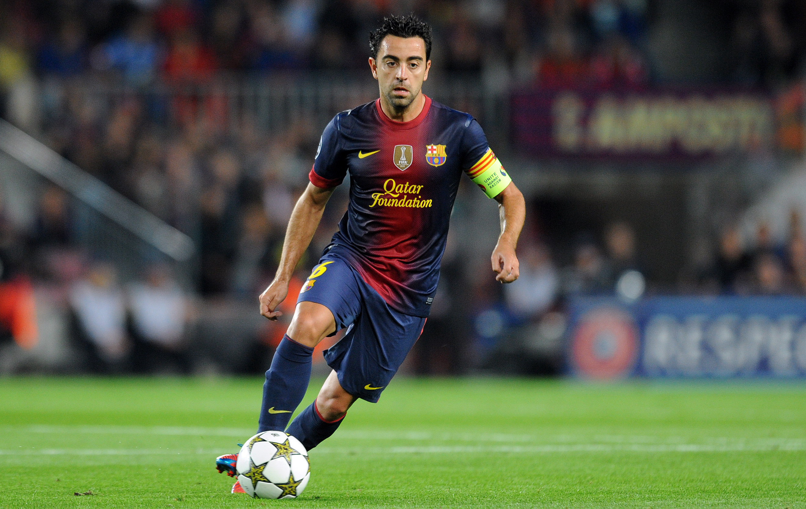

Лионе́ль Андре́с Ме́сси Куччитти́ни[a] (исп. Lionel Andrés Messi Cuccittini, испанское произношение: [ljoˈnel anˈdɾez ˈmesi] (Звук слушать); родился 24 июня 1987, Росарио, Аргентина) — аргентинский футболист, нападающий клуба «Пари Сен-Жермен», капитан сборной Аргентины. Лучший бомбардир в истории чемпионата Испании, «Барселоны» и сборной Аргентины. Признаётся одним из лучших футболистов всех времён[7][8][9]. Семикратный обладатель «Золотого мяча»[b], шестикратный — «Золотой бутсы». Воспитанник академии «Барселоны», вместе с этим клубом выиграл десять титулов чемпиона Испании, четыре Лиги чемпионов УЕФА, семь Кубков Испании, восемь Суперкубков Испании, три Суперкубка Европы и три чемпионата мира среди клубов.
В возрасте 13 лет вместе с родителями переехал в Испанию, чтобы присоединиться к молодёжной команде «Барселоны», в октябре 2004 года дебютировал за основной состав этого клубаПерейти к разделу «#Фарм-клубы и первые матчи в основной команде (2003—2005)». В течение своих первых лет в «Барселоне» ему удалось стать неотъемлемым игроком стартового состава, а в сезоне 2008/09 Месси вместе с клубом выиграл свой первый «требл» и «Золотой мяч»Перейти к разделу «#Первый «требл» и «Золотой мяч» (2008—2010)». Он становился обладателем «Золотого мяча» в течение следующих трёх лет и стал первым игроком, получившим эту награду четыре раза подряд[10]. В сезоне 2011/12 Месси установил рекорд по количеству голов, забитых за один сезон в чемпионате Испании, а также во всей Европе[11]. В сезоне 2014/15 он стал лучшим бомбардиром чемпионата Испании за всю историю и во второй раз выиграл «требл» со своим клубомПерейти к разделу «#Второй «требл», командные и личные успехи (2014—2016)». В 2018 году стал капитаном «Барселоны», а в 2019 году в шестой раз получил «Золотой мяч», установив рекорд по их количеству у одного игрокаПерейти к разделу «#Шестой «Золотой мяч» (2019—2020)». В 2021 году контракт аргентинца с «Барселоной» завершился и из-за финансового положения каталонского клуба не был продлен. В связи с этим Месси стал свободным агентом и бесплатно перешёл во французский «Пари Сен-Жермен»
Хавье́р Эрна́ндес Кре́ус[5] (кат. Xavier Hernández i Creus; род. 25 января 1980[1][2][3][…], Терраса, Каталония), более известный как Ха́ви[к 1] — испанский футболист, выступавший на позиции полузащитника. Главный тренер испанского клуба «Барселона». Считался одним из лучших полузащитников всех времён[9][10], он славился своим пасом, видением, удержанием мяча и позиционированием[11][12][13][14].
Хави присоединился к молодёжной академии «Барселоны» в возрасте 11 лет и дебютировал в первой команде в августе 1998 года в матче против «Мальорки». В общей сложности он провёл 767 официальных матчей, что является рекордом клуба, ныне принадлежащим Лионелю Месси, и забил 85 голов[15]. Хави — первый игрок в истории клуба, сыгравший 150 матчей в европейских турнирах и Клубном чемпионате мира ФИФА вместе взятых[16]. В составе «Барселоны» Хави выиграл восемь титулов чемпиона Испании и четыре титула Лиги чемпионов УЕФА. В 2009 году Хави занял третье место в номинации «Игрок года» по версии ФИФА, а в 2010 и 2011 годах занял третье место в номинации «Золотой мяч». В 2011 году он занял второе место после Лионеля Месси в номинации «Футболист года в Европе». В 2015 году он перешёл из «Барселоны» в «Аль-Садд», где выиграл четыре трофея, а в 2019 году завершил карьеру. Он является одним из немногих игроков, сыгравших более 1 000 матчей в профессиональной карьере.
В составе сборной Испании Хави выиграл молодёжный чемпионат мира в 1999 году и серебряную медаль Олимпийских игр 2000 года. Дебютировав за сборную в 2000 году, он 133 раза выходил на поле за свою страну и был влиятельной фигурой в успехах команды. Он сыграл важную роль в победе Испании на чемпионате мира 2010 года, а также в победах на Евро-2008 и Евро-2012. Он был признан лучшим игроком турнира на Евро-2008[17], а также был включён в команду турнира Евро-2008 и 2012. С двумя результативными передачами в финале Евро-2012 Хави стал первым игроком, отметившимся передачами в двух разных европейских финалах, после того как четырьмя годами ранее забил единственный гол в финале[18]. После чемпионата мира 2014 года Хави объявил о том, что больше не будет выступать за сборную[19].